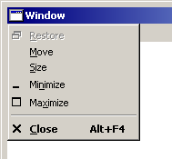

Pressing Alt-Space will also bring up this menu, as well as right-clicking on the title bar, or right-clicking on the window's task bar button.
Restore, Minimize, Maximize and Close are the same as the buttons which are discussed below. Notice that the Close item is highlighted in bold typeface. This means that when you double-click the program icon, it will close the window (well, that's what the bold is supposed to mean, but the bolding of the items is not very consistent throughout Windows).
Move will move the mouse pointer to the title bar, where you can drag it to move it. Dragging the title bar of a window will move it anyway, so it's kind of a waste of time to use the system menu for that, but what the Move command gives you is the ability to move a window using the cursor keys on the keyboard. You can press Alt-Space and then M, then pressing the arrow keys will move the window around. Pressing enter will stop the moving operation, and pressing escape will cancel it and put the window back where it was. This keyboard moving can be handy sometimes if one of your windows falls off the screen somehow. If you are ever in a situation where you can see a window when it's maximized, but it disappears when you restore it, then this is what has happened.
Size is like Move, but it sizes the window instead. The command will put the mouse pointer in the center of the window. You can click and drag at that point and when the pointer reaches the edge of the window it will begin sizing it. Kind of strange, but that's what it does. You can also the keyboard to size it, similar to the Move command.
Right-clicking on the title bar will bring up the system menu.
Double-clicking on the title bar will maximize the window if it is restored and will restore it if it is maximized.
"Minimize" isn't really a good name for this function, but what it does is hide the window. To get it back, click on its icon on the task bar.
This closes the window. Typically, if the window is the last window open in a program, then it will exit the program. In the TX81Z Programmer, if you close the main window, then it will close all of the windows in the program and exit the program.
The way a GUI program is conventionally made, the client area is the programmer's responsibility and the rest of the elements of the window are the responsibility of the GUI system, or the window manager, or whatever you want to call it. This brings the two big advantages that controls in general have: (1) it makes the user interface consistent across multiple programs, and (2) it relieves the programmer from having to write code to deal with the user's interactions with the window, which is huge time saver. It's an incredibly complex job to keep track of the sizes of the windows and the position of the mouse and which windows overlap which and how the output should be clipped due to the overlapping and so forth, and as a programmer, I'm glad I don't have to deal with that.
GUI systems are truly great innovations in computing, both in terms of their efficiency and convenience and in terms of their flexibility and possibilities and my appreciation for them is one of the biggest factors that drove me to write the TX81Z Programmer.